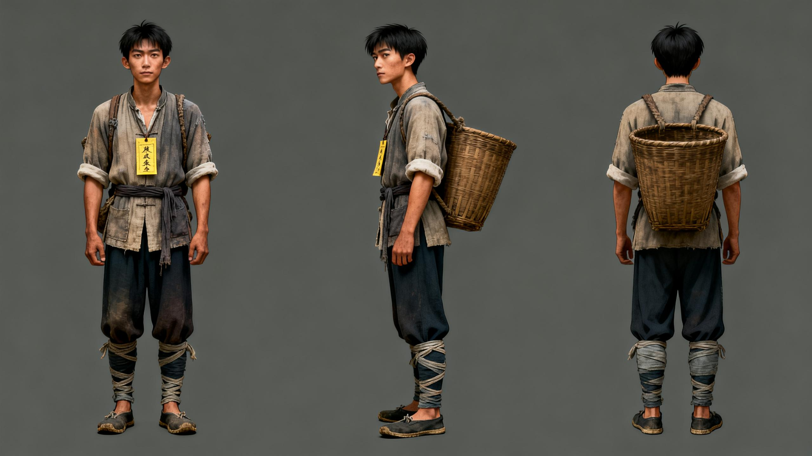
阿回
最新版脸模基准。瘦长脸、直眉、薄唇、倔，土气但不呆，后续所有阿回镜头以此为准。
这一版不再是零散关键帧，而是把《夜路铃》预告片真正整理成可讨论、可继续补生图、可直接往 animatic / 剪辑推进的一套完整体系。结构上严格围绕主线：火塘讲古 → 山路启程 → 禁忌提示 → 脚印与躲藏 → 赶尸显形 → “让” → 符灰 → 土地庙 → 同脸现身 → 母亲喊魂 → 老傩扣子 → 草鞋结尾 / 片名收束。
本页优先级不是“花”，而是人物能不能稳定、可复用、可反复补镜。尤其年轻赶尸人必须与阿回同脸，只允许气色与死亡感变化，不允许换成另一张更“帅”的脸。

最新版脸模基准。瘦长脸、直眉、薄唇、倔，土气但不呆，后续所有阿回镜头以此为准。
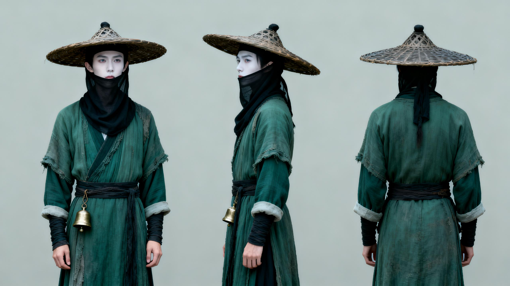
必须与阿回同脸，只能更白、更冷、更死，像一张提前走上夜路的阿回，而不是新角色。
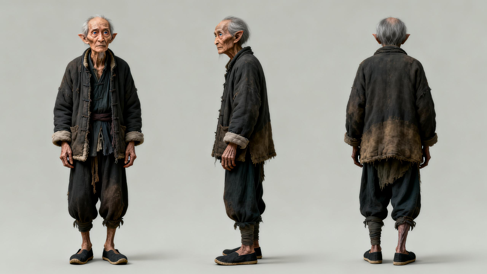
正常老人，不妖道化。干瘦、眼神亮、像真正见过旧事的人，负责给整个故事“口传可信度”。
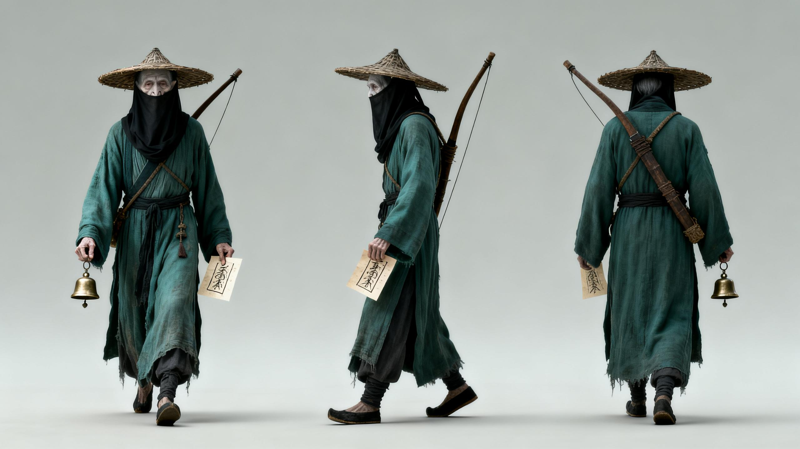
作为队伍权威感与仪式感的补充参照，用于后续如需扩拍更完整赶尸系统镜头。
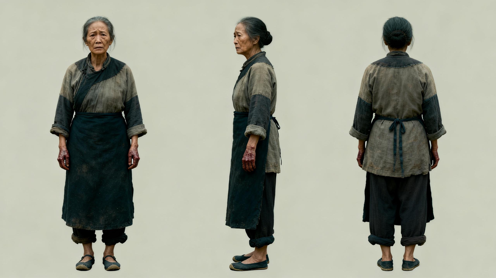
贫苦山村妇人，压抑、固执、爱意非常笨拙。她不是“哭戏工具人”，而是情感核心。
总时长按 2 分钟控制。前 40 秒给口传民俗与夜路规矩，中段把“遇上了”做实，后段靠同脸关系、母亲喊魂和老傩扣子把恐怖拉成命运感。
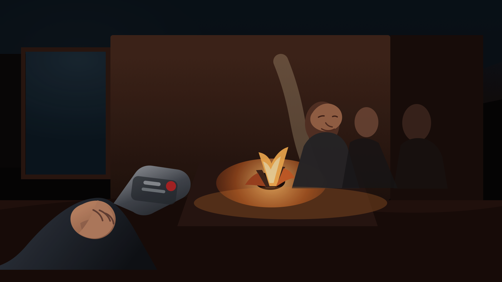
黑场先出铃，再切年轻写书人抬起录音笔的第一视角。火塘边只留老傩与一个模糊陪坐者，空间更像真实采访入口：不是一屋子人围坐听传奇，而是有人专门来问，他也终于肯讲。
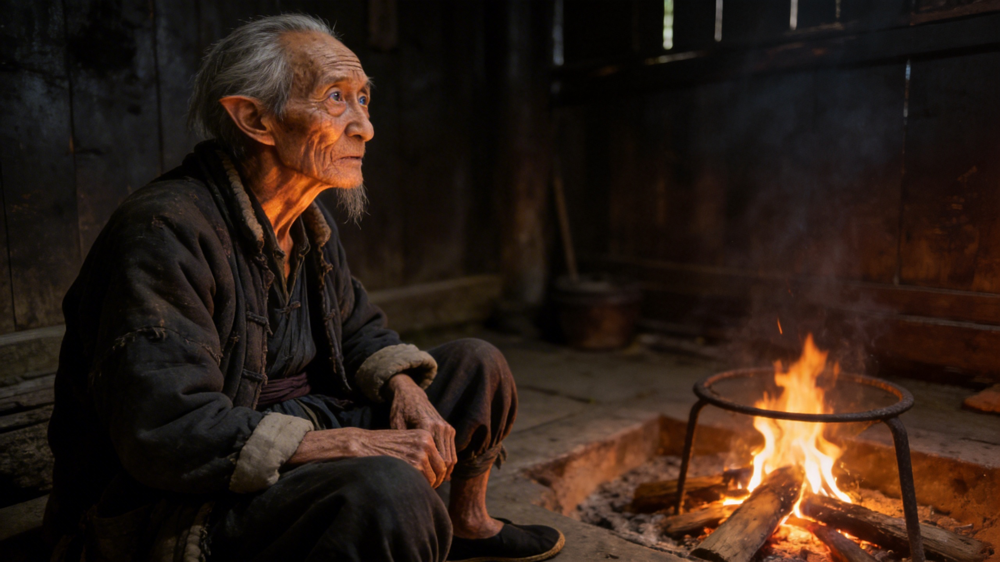
补一个更适合入剧情的老傩镜头，让他不只是一张角色图，而是故事真正的讲述者。火光打在脸沟壑上，像这事他一直没讲完。
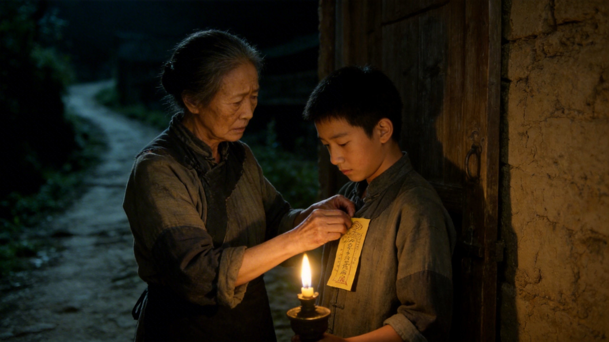
把母子关系提前落地。黄符不是玄学道具，而是母亲笨拙地想把儿子拽回来。这样后面符灰和喊魂才有痛感，不只是功能点。

月亮钉在山口，土路一头扎进黑里。预告片从讲述切到亲历，观众被放到阿回脚下那条路上，空间一下变冷。
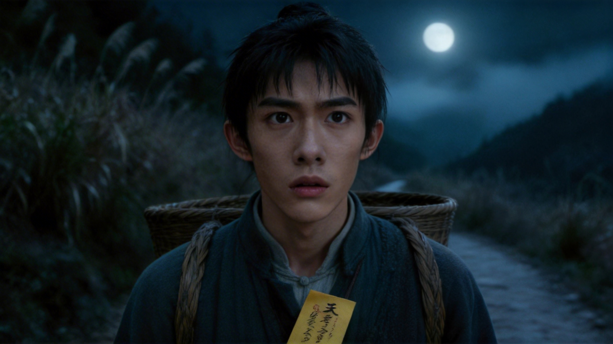
这张脸是后面所有反照的基准脸。现已按阿回三视图重新锁脸：阿回得像普通湘西山里少年，怕，但硬撑着走；不是漂亮演员硬演“朴素”。
补上禁忌系统里最关键的“地面动作”。阿回蹲下撒米，路就从抽象恐怖变成一种民俗里可操作、却也挡不住的规矩。
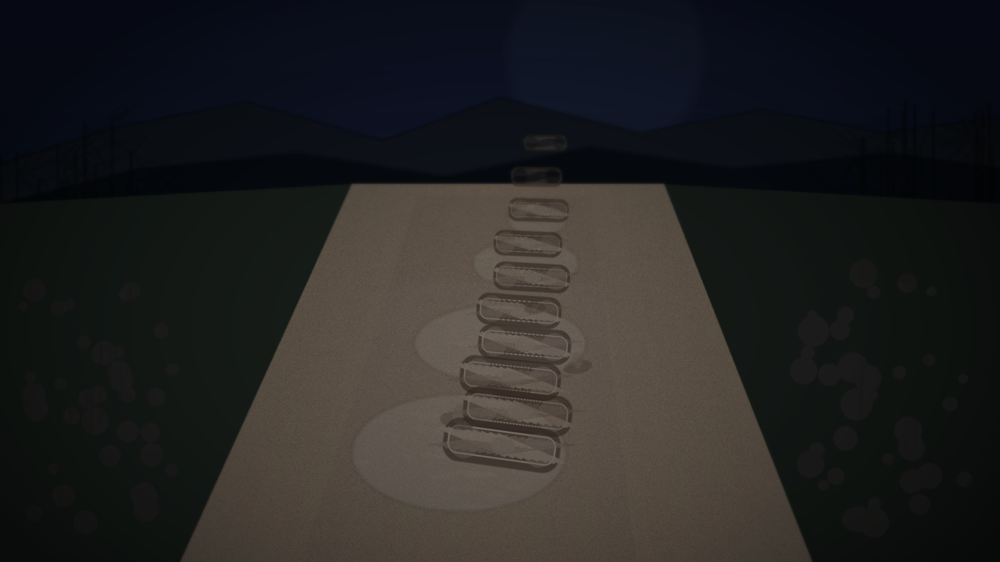
恐怖第一次真正落地。画面里不该出现草鞋本体，只该留下湿泥里整齐得过分的印痕；观众第一次确认，这东西真的在走，而且已经走到阿回身后。
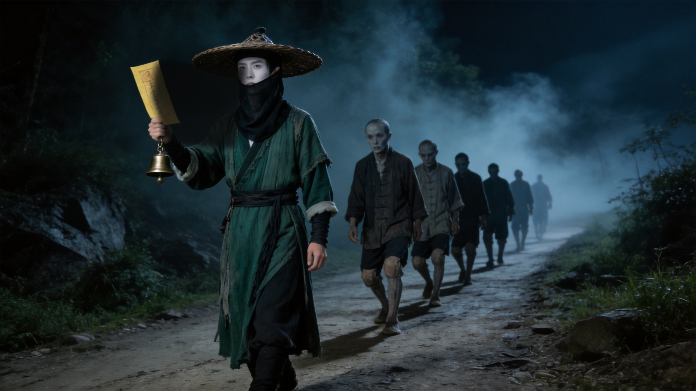
整支预告片第一次完整揭示类型元素。领路的赶尸人必须是斗笠压低、黑纱遮面，像按旧规矩办事的人；队伍整齐、沉默、膝盖不弯，像一支穿过夜山的死队，不要妖魔化到失真。
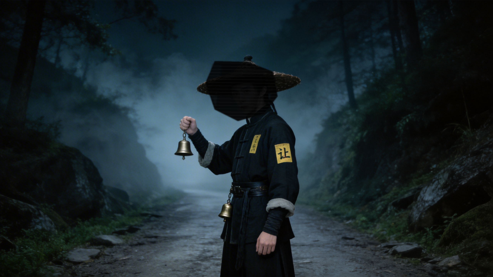
这是这一版必须补上的节奏铰链。赶尸人一停，铃声断掉，整个世界像被抽空。镜头里只给到斗笠下的黑纱、轮廓和发白的眼神，不把脸完全露出来；只说一个字，比喊叫和怪叫都更瘆人。
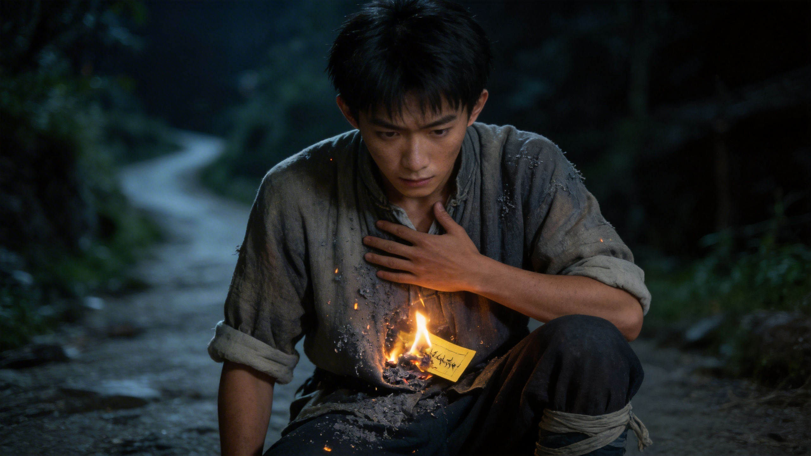
母亲给的护符在这里失效。胸口一烫，灰落到衣襟上，观众会明白：规矩知道了也没用，真正的路已经认上你了。

从山路切到庙门，是空间骤然收紧的一刀。草鞋摆在门槛前，像有人先一步脱下，也像在请人换路，视觉上非常适合做短停顿。

神龛、香灰、米粒、黄符全堆在狭窄空间里，民俗感在这里最密。这个镜头不是为了吓，是为了让观众知道“路”和“庙”之间有一套旧规矩在运作。
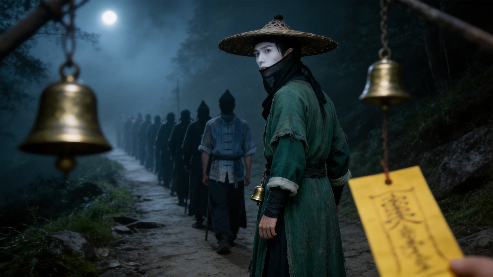
这是从“怕赶尸”往“怕自己已经在队里”迈出去的一步。末尾那具尸体一回头，恐怖就从外部目标变成身份塌陷。
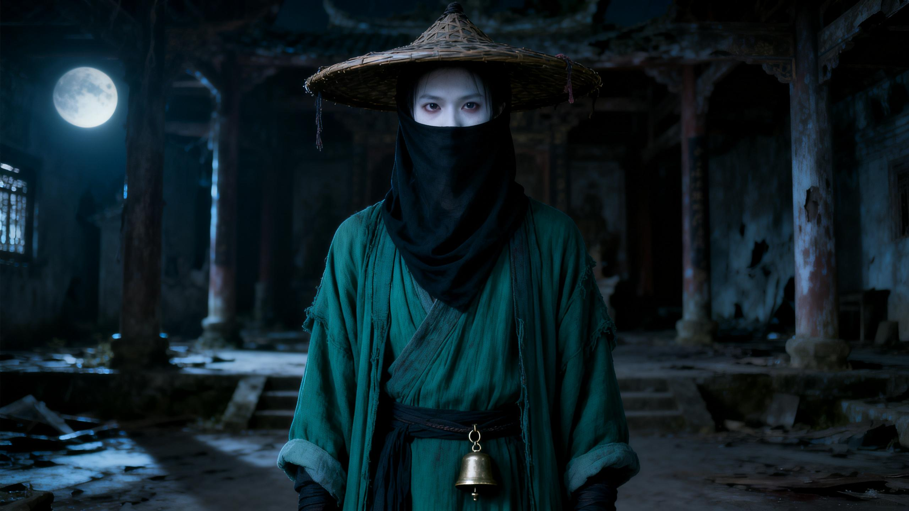
正式把年轻赶尸人推出画面中心。关键不是“鬼气”，而是他像另一个版本的阿回：已经更白、更冷、更安静地走在夜路上。
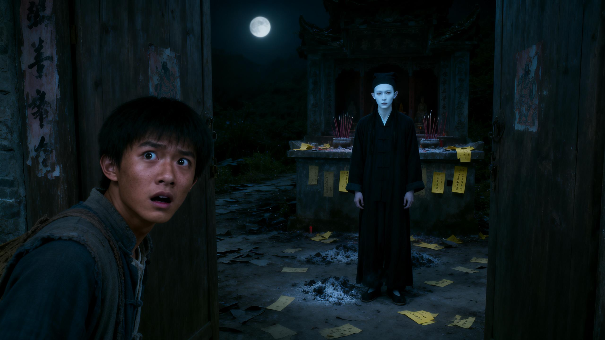
这是整支预告片最值钱的钉子镜头。不是“撞鬼”，而是“看见自己已经被夜路先走了一遍”。观众必须在这里彻底记住同脸逻辑。
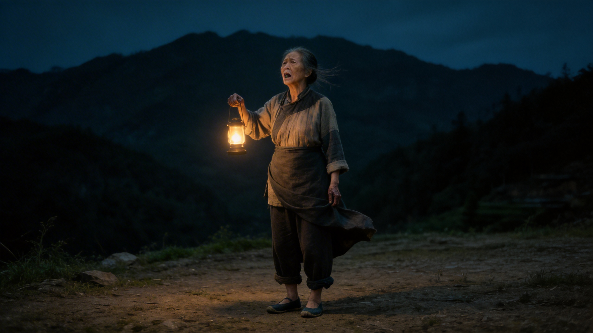
情绪峰值不能省。母亲一喊，恐怖就从类型片的惊吓转成人心真正疼的地方：有人还在等阿回回家吃饭。
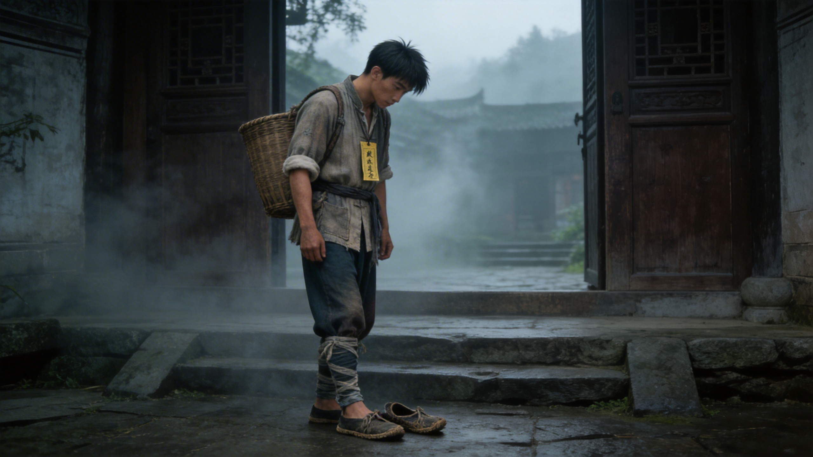
这是结尾最后一刺。可以理解成“出院 / 醒后 / 回到人间”的错觉，但一低头，草鞋已经在脚边，说明路没有结束，东西还跟着他。
片名卡前后可以插一声老傩的尾句：讲故事的人，也许根本没离开过那条路。黑场时只留最后一记孤铃，观众会把草鞋、同脸、母亲喊魂一起带走。
这轮新增不是为了凑数，而是专门补齐原先预告片结构里缺失的“逻辑桥”和“情绪钉子”。
把母亲与护符从道具变成情感因果链，后面喊魂才成立。
补齐民俗规矩和中段停顿，让夜路系统更完整、更可拍。
把“草鞋”从一个意象升成贯穿头尾的视觉咒语。
这一版分镜按 seedance-prompt-skill 的思路重写：先写技术参数和禁止项，再写角色一致性引用，然后用时间戳分镜法把画面、镜头语言、台词和音效绑在一起，方便直接复制去即梦继续生视频。
下面不是普通文案，而是已经按 Seedance 习惯重写过的镜头提示词骨架。真正喂即梦时，建议把 16 镜拆成 4 段，每段 12–15 秒，再用视频延长或剪辑串起来。